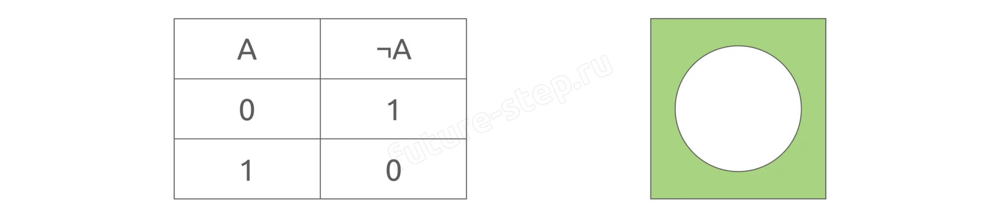
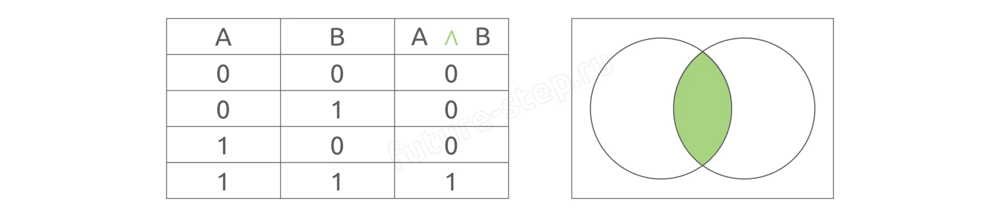
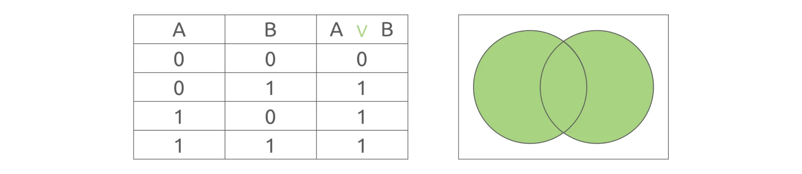
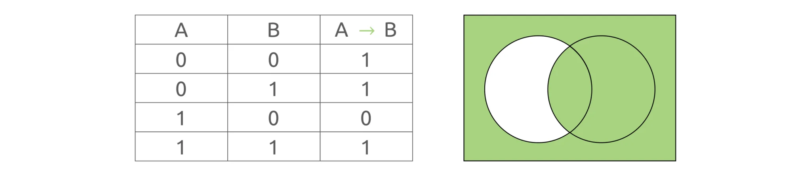
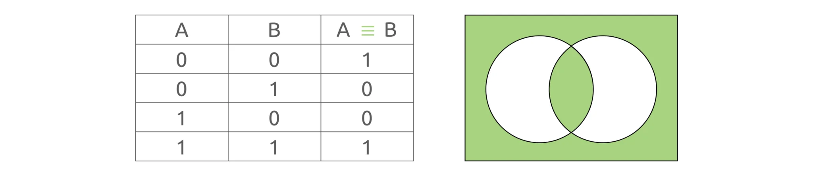

Теория · Логические операции, таблицы истинности и их реализация в Python
Алгебра логики (булева алгебра) — это раздел математики, который изучает операции с логическими величинами и законы, которым они подчиняются. Она лежит в основе работы всех цифровых устройств: от процессора в твоём телефоне до серверов, обрабатывающих запросы в интернете.
В основе алгебры логики лежит простая идея: утверждения могут быть только истинными или ложными. Никаких промежуточных значений — только «да» (1, True) или «нет» (0, False). Из этих двух значений, как из кирпичиков, строятся все логические выражения.
В задании 2 ЕГЭ используются пять логических операций. Разберём каждую: как работает, как записывается в математике и как реализуется в Python.
notМеняет значение на противоположное: истина → ложь, ложь → истина.
| A | ¬A |
|---|---|
| 0 | 1 |
| 1 | 0 |

a = True b = not a print(b) >>> False
andИстинна только когда оба аргумента истинны. Хотя бы один ложен — результат ложь.
| A | B | A ∧ B |
|---|---|---|
| 0 | 0 | 0 |
| 0 | 1 | 0 |
| 1 | 0 | 0 |
| 1 | 1 | 1 |

a = True b = False result = a and b print(result) >>> False
orИстинна, если хотя бы один аргумент истинен. Ложь — только когда оба ложны.
| A | B | A ∨ B |
|---|---|---|
| 0 | 0 | 0 |
| 0 | 1 | 1 |
| 1 | 0 | 1 |
| 1 | 1 | 1 |

a = True b = False result = a or b print(result) >>> True
not A or B или A <= BЛожна только в одном случае: когда из истины следует ложь (A=1, B=0). Во всех остальных — истина.
Простой способ запомнить: «из истины нельзя получить ложь».
| A | B | A → B |
|---|---|---|
| 0 | 0 | 1 |
| 0 | 1 | 1 |
| 1 | 0 | 0 |
| 1 | 1 | 1 |

🔑 Лайфхак: импликацию A → B можно заменить на A <= B. Смотри: импликация ложна только при A=1, B=0 — то есть когда A > B. Значит, когда A ≤ B — она истинна.
# Способ 1: через not и or result = not a or b # Способ 2: через <= (компактнее) result = a <= b
==Истинна, если оба аргумента одинаковы. Различаются — ложь.
| A | B | A ≡ B |
|---|---|---|
| 0 | 0 | 1 |
| 0 | 1 | 0 |
| 1 | 0 | 0 |
| 1 | 1 | 1 |

result = a == b
⚠️ Порядок операций в алгебре логики и в Python не совпадает. Это главная причина ошибок в задании 2.
💡 Причина: в Python импликация и эквивалентность — это операторы сравнения (<=, ==). Они выполняются раньше логических операторов (not, and, or). Поэтому при переводе логических выражений в код всегда используй скобки.
F(x, y, z, w) = ((x ≡ y) ∧ ¬z) ∨ (w → x)
Порядок в алгебре логики:
Запись в Python:
result = ((x == y) and (not z)) or (w <= x)
Проверим при x=True, y=False, z=True, w=False:
x = True; y = False; z = True; w = False result = ((x == y) and (not z)) or (w <= x) print(result) >>> True
F(x, y, z, w) = x ≡ y ∧ z → w
В алгебре логики: сначала ∧, потом →, потом ≡.
❌ Неправильно:
result = x == y and z <= w
Python сначала выполнит оба сравнения, потом and — порядок нарушен!
✅ Правильно:
result = x == ((y and z) <= w)
Скобки принудительно задают порядок: сначала (y and z), затем <= w, затем x == ....
Этот раздел — для тех, кто хочет решать задание 2 полностью программно, не анализируя таблицу вручную. Код перебирает все возможные комбинации значений в пустых ячейках и все перестановки переменных, находя единственно верный вариант. Внимание: автокод универсален, но требует аккуратной настройки под конкретную задачу.
# Импортируем все функции из itertools (product, permutations) from itertools import * # Логическая функция из условия — её нужно переписать на Python def f(x, y, z, w): return (x == (not y)) <= ((z <= (not w)) and (w <= y)) # Перебираем все комбинации 0/1 для неизвестных ячеек таблицы # repeat = количество пустых ячеек в таблице (здесь их 5) for a in product([0, 1], repeat=5): # Таблица из условия: каждая строка — набор (x, y, z, w, F) # a[0], a[1], ... — подставляем на места неизвестных table = ((1, 1, 0, 1, 1), (0, a[0], 0, a[1], 0), (a[2], a[3], a[4], 0, 0)) # Проверяем, что все строки таблицы уникальны if len(table) == len(set(table)): # Перебираем все перестановки имён переменных for p in permutations('xyzw', r=4): # Проверяем: для каждой строки таблицы значение функции # совпадает с последним столбцом (F) if all(f(**dict(zip(p, line))) == line[-1] for line in table): print(*p)
| Строка кода | Что меняется |
|---|---|
def f(x, y, z, w): | Имена и количество аргументов — как в условии (может быть 3, 4 или 5 переменных) |
return ... | Логическая функция из условия, записанная на Python (следя за приоритетом операций!) |
repeat=5 | Количество пустых (неизвестных) ячеек в таблице из условия |
table = (...) | Таблица из условия. Каждая строка — кортеж из значений переменных + значение F на последнем месте. Пустые ячейки заменяем на a[0], a[1], ... |
'xyzw' | Буквы переменных (без пробелов и запятых), в алфавитном порядке |
r=4 | Количество переменных в функции |
💡 Как работает:
{'x': 1, 'y': 1, 'z': 0, 'w': 1}.⚠️ Важно: автокод — мощный, но небезопасный инструмент. Если в таблице есть строки, которые не различаются (даже после подстановки a[...]), условие len(table) == len(set(table)) отсеет такие комбинации. Если логическая функция записана с ошибкой в приоритете операций — ответ будет неверным. Всегда проверяйте результат ручным анализом!